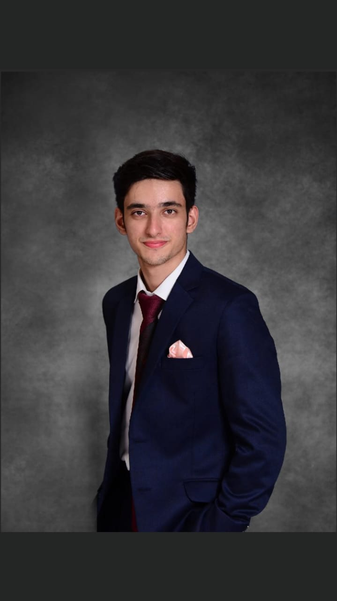

Asad Tariq
Web Developer

A motivated goal-driven individual with time management and collaboration skills
developed from sporting and volunteer engagements. Strong interpersonal skills
enhanced by taking part in public speaking events to develop confidence and communication abilities Seeking opportunity in an organisation where my academic
knowledge can be converted into professional efficiency, my skills can be utilised at
the maximum level and an environment that can help in reshaping my abilities further.
Education and Qualifications
BS Computer Science (2021-Present)
FAST-NUCES, Karachi
CGPA-3.54
GCE As & A Level (Jun 2019 - Oct 2020)
Foundation Public School, Karachi
GCE O Level (Jun 2017 - Jun 2019)
Sadequain Grammar School, Karachi
Projects
Fake News Detection Website (Semester Project)
- Designed a fake news detection website using HTML and CSS for frontend with a backend powered by FLASK.
- Implemented supervised learning for text classification (fake vs. real news) using CSV files for training and testing data.
- Employed MySQL database for data storage.
- Tools and technologies: scikit-learn, pandas, numpy, Jupyter, VS Code.
Sleep Monitoring Website (Semester Project)
- Designed a responsive, user-friendly website with personalized insights.
- Implemented a robust backend for data storage and retrieval, addressing real-time challenges.
- Tools and technologies: MySQL, MERN, VS Code.
Blame Game - Among Us Ripoff (Semester Project)
- Designed an interactive multiplayer game inspired by Among Us.
- Crafted an engaging gaming experience with a user-friendly interface.
- Tools and technologies: C++, Dev C++.
Port Management System (Semester Project)
- Developed a streamlined system, enhancing efficiency and functionalityfor seamless port and ship operations.
- Implemented effective file handling for organized data storage and retrieval within the application.
- Tools and technologies: C++, Dev C++.
Awards and Achievements
- Sadequain Grammar School’s Highest Achiever in CAIE (GCE O Level) 2018.
- Habib University’s Meritorious Award(2019-2020).
- Dean’s List of Honor: Spring ‘23 | Spring ‘22 | Fall ‘21
Skills
- Microsoft Excel⭐️⭐️⭐️⭐️
- MERN Stack⭐️⭐️⭐️
- Javascript⭐️⭐️⭐️
- Python⭐️⭐️⭐️
- C/C++⭐️⭐️⭐️⭐️
- MySQL⭐️⭐️⭐️⭐️
Personal